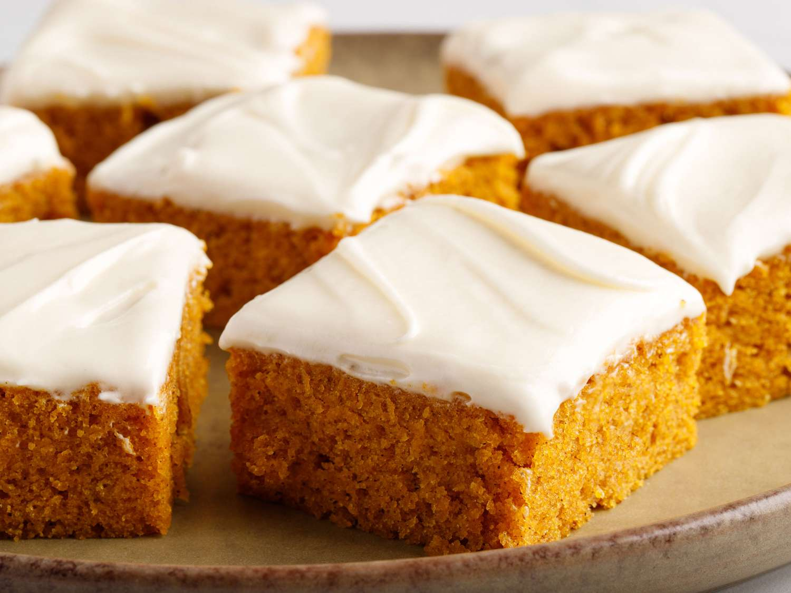

Pumpkin Bars

Description
Pumpkin cake topped with cream cheese frosting!
Utterly delightful!
Ingredients
For the cake:
- eggs
- pumpkin puree
- white sugar
- vegetable oil
- all-purpose flour
- cinnamon
- baking soda
- baking powder
- salt
For the frostng:
- butter
- cream cheese
- vanilla extract
- confectioners' sugar
Steps
- Bake the Cake: Beat the wet ingredients in a bowl until well-combined.
Sift the dry ingredients together in a separate bowl, then add the dry mixture to the wet mixture.
Spread the batter in an ungreased jelly roll pan.
Bake in a preheated oven until the cake bounces back when gently pressed.
- Make the Frosting: Beat the butter and cream cheese together until smooth, then stir in the vanilla.
Add the confectioners' sugar a little at a time, beating until mixture is smooth.
- Frost and Cut the Bars: Evenly spread the frosting over the cooled cake.
Cut into 24 equal squares.